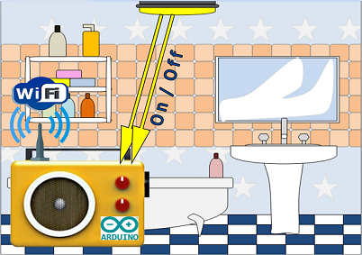
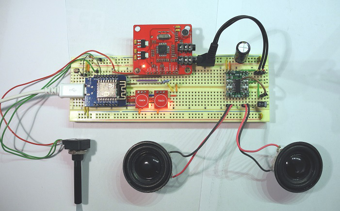
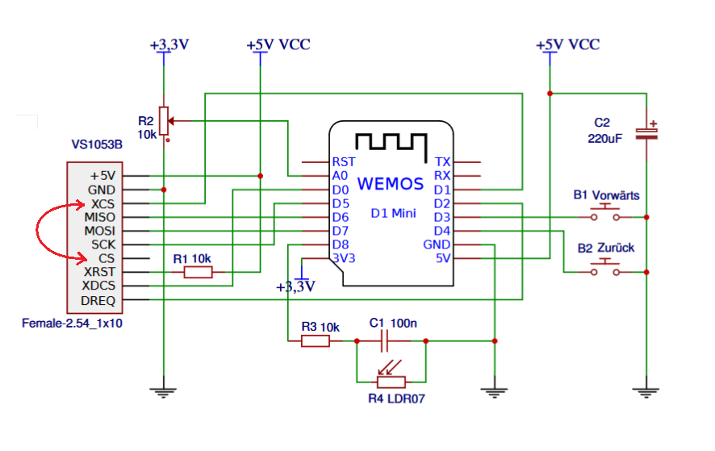
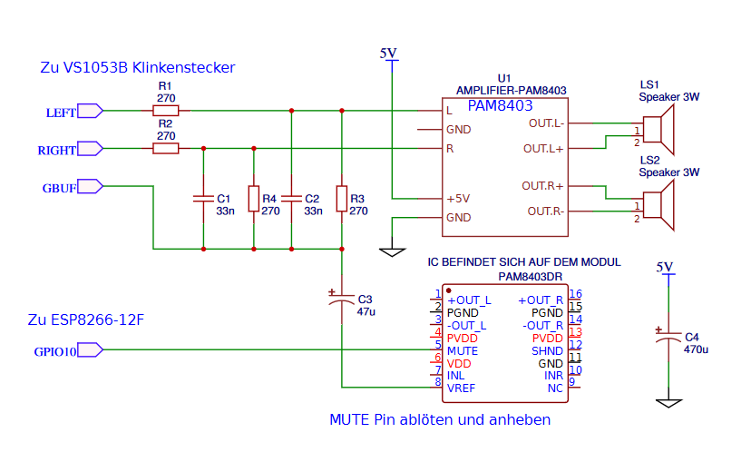
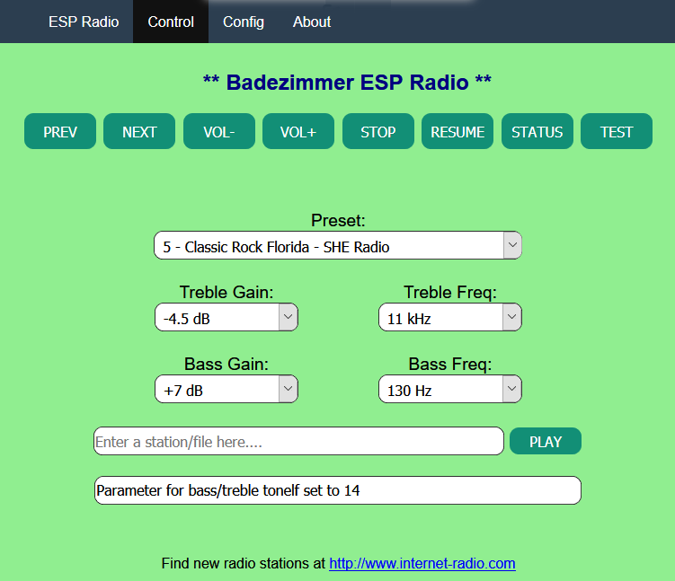
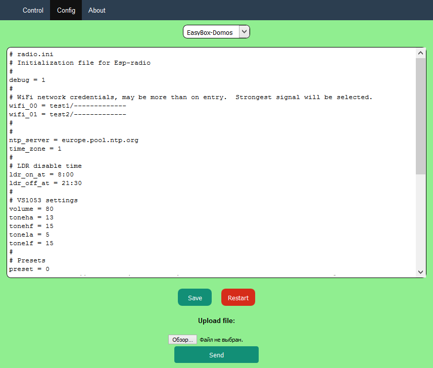
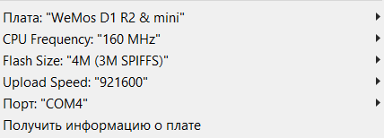

WiFi интернет радиоприемник для ванной с фоторезистором
Deutsch
|

Может воспроизводить аудиофайлы MP3 или Ogg до 320 кбит / с
Может воспроизводить MP3 файлы с любого сервера
100 Интернет-радиостанций могут быть сохранены в файле конфигурации
Файл конфигурации можно редактировать через веб-интерфейс
Файл конфигурации можно загрузить через веб-интерфейс
Может управляться через последовательный интерфейс RS232 (TTL)
Автоматически выбирается самая сильная доступная сеть Wi-Fi
20kB кольцевой буфер для плавного воспроизведения
Уровни низких и высоких частот настраиваются в конфигурационном файле
Синхронизирует время с NTP — сервером
Автоматическое переключение летнего / зимнего времени
Включается при включении света в помещении с помощью фоторезистора
Управление светом с помощью фоторезистора автоматически отключается на ночь по таймеру
Выключение усилителя с помощью MUTE сигнала для бесшумной работы в режиме ожидания
Может воспроизводить станции iHeartRadio
Может воспроизводить станции 101.ru

Я хотел бы представить свой проект WiFi интернет радиоприемник для ванной комнаты
Программное обеспечение для ESP8266 Arduino было разработано Edzelf и было взято из этого проекта.
Я всего лишь изменил концепцию управления и адаптировал радио для работы в ванной комнате. Включение выключение интернет радиоприемника зависит от освещенности в комнате. То есть я установил сенсор освещенности - фоторезистор. Также добавил синхронизацию времени по ntp и возможность воспроизведения интернет радиостанции 101.ru
Когда я захожу в ванную комнату должна начинать играть легкая музыка. Когда я выхожу из ванной музыка должна автоматически выключаться. Эту идею я подсмотрел в одном отеле в Болгарии.
В качестве элементов управления мне понадобится регулятор громкости и две кнопки для переключения между интернет-радиостанциями.
LDR (датчик освещенности) обнаруживает, когда я вхожу в ванную комнату. Ах да, еще нужно ночное отключение, если я пойду в туалет ночью, музыка не должна включаться.
В отличие от проектов интернет радио плееров с Raspberry Pi (малинкой), этот самодельный Wi-Fi радиоприемник намного дешевле. Стоимость компонентов составляет всего 11,58 € (с Aliexpress).
И, конечно же есть преимущество в том, что вам не нужен Linux, только с помощью знаний Arduino вы можете вносить свои изменения.
Кроме того, такое ESP-радио потребляет намного меньше электроэнергии, чем Raspberry Pi радиоприемник, а также он запускается намного быстрее. В этом интернет радиоприемнике ESP8266 всегда готов к работе и подключен к Wi-Fi и начинает воспроизводить онлайн-радио, моментально после включения лампы в ванной комнате.
Потребляемая мощность в режиме ожидания составляет 130 мА. С wi-fi интернет радио на Raspberry Pi, это было бы проблематично, потому что, либо Raspberry Pi полностью загружен операционной системий и использует много энергии, либо выключен, но тогда загрузка занимает довольно много времени.
Принципиальная электрическая схема цифровая часть

Регулятор громкости
В качестве регулятора громкости может быть использован любой потенциометр в диапазоне 1 кОм ... 100 кОм. Он подключается между между питанием 3,3 В и масой.
Напряжение с потенциометра считывается преобразователем AD-преобразователем (контакт A0). Чтобы значение не прыгало назад и вперед, в программу введён гистерезис 5.
Практика показала, что по-прежнему необходим электронный фильтр. Самый простой способ для меня - припаять SMD конденсатор 200 нФ непосредственно к плате D1 mini WEMOS. Конденсатор припаивается прямо поверх резистора напротив ножки D0. Если вы не хотите этого делать, вы можете также присоединить такой RC-фильтр, между входом A0 и массой конденсатор 1 мкФ, и резистор 10 кОм между потенциометром и входом А0.
LDR - Датчик света
LDR подключен настолько странно по той причине, что порт D8 должен иметь обязательно низкий уровень во время загрузки модуля ESP. Схема LDR работает следующим образом: D8 переключается как выход и выдает 3,3 В, конденсатор заряжается, затем D8 переключается как вход и проверяет, остается ли напряжение на конденсаторе. Чем больше света попадает на LDR, тем быстрее разряжается конденсатор.
Отключение звука
Для меня было очень важно, чтобы не было слышно ни малейшего шума, пока WiFi интернет радиоприемник для ванной находится в режиме ожидания. Все усилители создают немного фонового шума при отсутствии сигнала. Единственный способ избавиться от этого шума - отключить усилитель. Для этого нам нужен сигнал. Но все GPIO в ESP8266 заняты. На D1 mini WeMos NodeMcu установлен ESP8266-12F, и у него еще есть дополнительные GPIO. Мне удалось использовать GPIO10 для этой функции.
Я прочитал в Интернете, что некоторые ESP8266-12F (в зависимости от производителя) сбрасываются при переключении GPIO10. Если у вас так происходит, отключите эту функцию в строке 21.
Принципиальная электрическая схема аналоговая часть

Кстати, радиолюбители конструирующиe интернет-радиоприемник на VS1053 скрывают огромную проблему подключения усилителя к модулю VS1053B.
Все подключают наушники или усилители с отдельным источником питания и довольны этим.
Проблема в том, что как только вы подключите усилитель с общей массой к модулю VS1053, вы услышите очень сильный цифровой шум, который даже заглушает полезный сигнал. Контакт массы гнезда для наушников (GBUF) в соответствии с техническим паспортом не должны быть подключены к массе остальной цепи. Два часа я пробовал с различными фильтрами в аналоговый части и на линиях питания. Никакие фильтры не позволяют избавиться от этого шума. Наконец, я нашел правильное ключевое слово в Интернете - «дифференциальные входы». Если подключить дифференциальный входной усилитель (например, TDA8932) к модулю VS1053, то цифровой шум исчезает полностю.
Секрет массы гнезда для наушников GBUF заключается в том, что он также передает шум с одинаковой полярностью. Таким образом, контакт массы гнезда для наушников GBUF должен быть соеденён с отрицательным входом усилителя, а звуковой сигнал должен быть соеденён с положительным входом усилителя. Я нашел окончательное решение проблемы цифрового шума здесь.
GBUF можно подключить к выходу VREF ножка 8 усилителя PAM8403. После этого цифровой шум полностью исчез. Когда это получилось я чуть не закричал Эврика. Усилитель меньшей фонет если GBUF и VREF соединять не на прямую а через конденсатор 25мФ...100мФ.
Припяйте тонкий провод ко входу VREF ножка 8 микросхемы PAM8403. Эту ножку не надо отпаивать от платы.
А вот ножка 5 MUTE должена быть отсоединена от платы и поднята вверх.
R1, R3 и R2, R4 образуют делитель напряжения, который делит аудиосигнал на 2. Если максимального уровни громкости недостаточно, то удалите R3 и R4 (фон во время пауз также усилится).
Конденсатор C4 470 мкФ должен быть установлен как можно ближе к модулю PAM8403, чтобы обеспечить максимальный ток для баса.
Требования к источнику питания
Мои измерения показали, что при максимальной громкости при использовании динамика на 120 Вт потребляется 500 мА. Поэтому 5 В USB зарядка должна быть рассчитана на 1 А. Пожалуйста не заводите питание через через гнездо micro USB модуля WeMos. Он не может проводить столько мощности, и усилитель звука получает меньше напряжения из-за потерь микро-USB и зарядном кабеле.
Управление
Управление осуществляется с помощью двух кнопок и регулятора громкости. Кнопка 1 - следующая радиостанция, кнопка 2 - предыдущая радиостанция.
Удерживя кнопку «следующая радиостанция» в течение 2 секунд вы выключите самодельный интернет радио плеер. Если wifi интернет радио выключено то его можно снова включить любой кнопкой.
Я сконструировал это интернет-радио для использования в ванной комнате. Для этой цели ESP радиоприемник включается и выключается с помощью светочувствительного датчика LDR. Когда вы войдете в ванную комнату и включите свет, ESP8266 Интернет Радио включиться , а когда вы выключите свет, интернет-радио на ESP8266 снова выключиться.
У вас также есть возможность автоматически отключать управление светом на ночь. Настройка времени, когда интернет-радио управляется светом, создается в файле «radio.ini». В переменных «ldr_on_at = 8:00», «ldr_off_at = 21:30». Вы можете изменить файл «radio.ini» через веб-интерфейс Ардуино радиоприемника ESP8266 или же редактировать его на своем компьютере, а затем загрузить его через веб-интерфейс.

Чтобы добраться до веб-интерфейса WiFi радиоприемника для ванной , вы должны сначала узнать IP-адрес интернет радиоприемника для ванной. Вы можете это сделать, открыв веб-страницу своего маршрутизатора и ищите WiFi-клиентов. Там вы найдете WiFi-устройство под названием «Esp-radio».
Лучше всего настроить маршрутизатор так, чтобы он всегда назначал один и тот же IP-адрес для «Esp radio». Теперь вы можете вызвать веб-сайт интернет- радиоприемника на ПК, планшет или мобильный телефон по IP-адресу.
Через веб-интерфейс на странице „Control“ вы можете управлять веб радио плеером. Вы можете попробовать новые интернет-радиостанции в строке над кнопкой «Play». Там вы можете указать ссылку на потоковое вещание (streaming link), ссылку на MP3 фаил, ссылку на плейлист, имя станции iHeartRadio или номер станции 101.ru онлайн-радио.
На вкладке „Config“ вы можете отредактировать файл конфигурации «radio.ini» или загрузить его с ПК. Здесь вы можете также загрузить любой файл в SPIFF (файловая система ESP8266). Могут быть загружены не только «radio.ini», но и небольшие MP3-файлы. Здесь также перечислены доступные сети Wi-Fi.
Если ESP8266 не сможет подключиться к Wi-Fi сети , ESP8266 стартует как WiFi Точка доступа с именем „Esp Radio“, и вам нужно будет подключиться к этой точке доступа. Пароль - «Esp-Radio». Затем можно связатся с ESP8266 Arduino радиоприемником по адресу http://192.168.4.1
Если вы еще не загрузили «radio.ini», вы можете сделать это через загрузку файла на странице „Control“.

Файл настроек
Файл конфигурации «radio.ini» находится в папке проекта в каталоге „data“.
Этот файл должен быть загружен в SPIFF (файловая система ESP8266), либо через Arduino IDE и Sketch Data Upload tool, или если вы уже загружаете скомпилированную прошивку с использованием пакетного файла (Batch-file), «radio.ini» будет автоматически преобразовываться в SPIFF и также загружаться.
В этом файле делаются все настройки. Там вы можете ввести несколько названий Wi Fi сетей и пароли, с которыми может связыватся самодельное wi-fi интернет радио: wifi_00 , wifi_01 , wifi_02.
В строке 4 «debug = 1» вы можете включать и отключать режим отладки „debug = 1“. В режиме отладки выдаются сообщения о состоянии и событиях проишодящих в Интернет-радио через последовательный интерфейс.
В строках с параметрами «ldr_on_at» и «ldr_off_at» вы можете установить время начала и окончания управления радиоприемником через освещение (LDR). Там вы можете настроить когда будет работать автоматическое включение интернет-радио.
Есть елементарный эквалайзер . Вы можете настроить его здесь:
Регулировка усиления высоты
Установка частоты высоты
Настройка усиления басов
Настройка частоты басов
Лучше сначала попробовать различные настройки через веб-интерфейс, как только вы найдете оптимальные значения, введите их в файл конфигурации.
В части конфигурационного файла "Presets" вы можете сохранить онлаин радиостанции и ссылки на MP3 / Ogg файлы для воспроизведения. Можно сохранить до 100 станций.
Возможны следующие форматы:
http://87.98.217.63:23490/stream --- Ссылка на потоковое радио
87.98.217.63:23490/stream --- Ссылка на поток без "http"
www.rockantenne.de/webradio/rockantenne.m3u --- Ссылка на плейлист
www.terrasound.de/wp-content/uploads/2016/04/funk_warte_terrasound.mp3 --- Ссылка на MP3 файл
ihr/IHR_IEDM --- iHeartRadio-вебрадио
101/7 --- 101.ru онлайн радио - число после косой черты - номер радиостанции.
Скачать Скомпилированную программу - готовая прошивка
Может быть напрямую загружена в микроконтроллер без Arduino IDE и знаний в области программирования.
Вам нужен только кабель от сотового телефона. Tool для загрузки находится в ZIP-файле .
Скачать прошивку бинарник под ESP8266 интернет-радио для ванной комнаты D1 mini WeMos NodeMcu -инструмент для загрузки прошивки и инструкция находятся в архиве. (Скомпилиеровано в Arduino версии 1.8.5, ESP8266 библиотека версии. 2.3.0).
Вы можете установить предварительные настройки для WiFi интернет радиоприемника для ванной в data / radio.ini. Например, введите данные доступа для вашей сети WiFi.
Скачать исходный код ардуино проект (скетч)
В ZIP-файле находится полный проект Arduino и необходимые библиотеки. Библиотеки должны быть скопированы в «папка с Arduino sketch/ libraries».
Скачать проект WiFi интернет радиоприемник для ванной своими руками -Sketch для ардуино, требуется библиотека Core for ESP8266 WiFi chip
|
Особенности при компиляции |
 |
Если вы нашли интересное веб-радио на 101.ru, найдите номер радиостанции, (http://101.ru/radio/channel/120 New Age). 120 - это номер станции.
С помощью записи 101/120 в разделе „Presets“ INI-файла вы можете сохранить эту радиостанцию, или через веб-интерфейс самодельного радиоприемника на вкладке „Control“ можете задать и послушать эту радиостанцию.
Команды управления могут быть отправлены через последовательный интерфейс RS232 (TTL).
Команды управления могут быть отправлены через веб-браузер в следующем формате: http://192.168.2.13/?[parameter]=[value]
(http://192.168.2.13/?upvolume=2)
preset = 12 Select start preset to con
uppreset = 1 Select next preset or play
downpreset = 1 Select previous preset or
preset_00 = [mp3 stream] Specify station for a pres
volume = 95 Percentage between 0 and 1
upvolume = 2 Add percentage to current
downvolume = 2 Subtract percentage from c
toneha = [0..15] Setting treble gain
tonehf = [0..15] Setting treble frequency
tonela = [0..15] Setting bass gain
tonelf = [0..15] Setting treble frequency
station = [mp3 stream] Select new station (will n
station = [URL].mp3 Play standalone .mp3 file
station = [URL].m3u Select playlist (will not
xml = [Mountpoint] Select iHeartRadio station
mute Mute the music
unmute Unmute the music
stop Stop player
resume Resume player
wifi_00 = mySSID/mypassword Set WiFi SSID and password
status Show current URL to play
test For test purposes
debug = 0 or 1 Switch debugging on or off
reset Restart the ESP8266
analog Show current analog input
Я извеняюсь за мой русский. Изначально писал на немецком, потом переводил на русский. Живу в Германии 22 года, потому не замечаю корявости слога.
{kind=link}